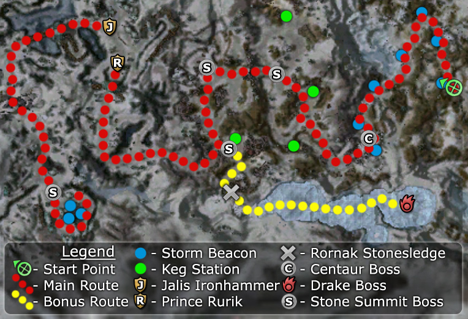

Elite: None / not listed
M5
Borlis Pass
◉ Mission Map

Click to enlarge · Local cache · Wiki
Summary (click to expand)
The refugees have waited days for Prince Rurik to return with word of his meeting with Jalis Ironhammer . Now, to cross the pass, they must head out into a raging snowstorm, and reach the shelter of Grooble's Gulch . You must go out ahead, and light the storm beacons so that refugees can make it through without getting lost. Once the beacons are lit, you must keep going until you locate Rurik.
Region: Northern Shiverpeaks · Mission: 5 of 25 · Type: Cooperative
✓ Objectives
Negotiate passage to Grooble's Gulch and shelter for the Ascalon refugees.
- Ignite all the storm beacons to light the way through the storm.
- Find out what happened to Prince Rurik's negotiations with Dwarf king Jalis Ironhammer.
- ADDED: Break through the locked gate into Maladar's Fort.
- ADDED: Bring an end to the siege of Krok's Hollow. Destroy the ballistae and the forces outside the gates.
- ADDED: Light the magical signal beacons.
- *BONUS* Kill the ice drake.
→ Walkthrough
The first part of the Borlis Pass mission is fairly straightforward. Talk to Ascalon Guard Hayden at the beginning of the mission, he will hand you a torch and tell you to light the Storm Beacons along the road so the Ascalon refugees can find their way through the mountains while the storm rages. Follow the path and light all beacons on the way, the centaur patrols shouldn't be too hard to deal with. There are a total of seven beacons, with the last being guarded by a centaur boss.
Ascalon Guard Tolis will be standing a short distance from the last beacon, guarding a large iron gate, hand him the torch when you have lit all the beacons and he'll grant you passage as well as your next objective, destroying the gate to Maladar's Fort.
Follow the path once again and obtain a Dwarven Powder Keg from the nearby Dwarven Powder Keg Station which you will use to blow open the gate once you reach it. The gate is easy to find, a boss guards the entrance, defeat him and any nearby enemies and blow open the gate by dropping the powder keg close to it.
A new objective has now been added to your quest log, destroying the ballistae and ending the siege of Krok's Hollow.
Continue on through the destroyed gate and you'll quickly spot the first two ballistae, with a boss near them. Defeat him and the two Stone Summit Engineers to destroy the ballistae. Once you have done this continue down the path left of the ballistae and you'll come across another closed gate with a single mob in front of it. Defeat them and open the gate by using the lever nearby.
Note: To complete the bonus mission you will need to head past the gate and spring Rornak Stonesledge free from his prison, more information on the bonus can be found in the bonus section.
After opening the gate, continue on the path and defeat any enemies you come across. You'll end up before the gates to Krok's Hollow, which will only open once all Stone Summit and Ice Golems nearby have been defeated. The groups are particularly close to each other in this area, so proper pulling is very important to avoid overaggro. Beware of two Ice Golem patrols that may seem to be stationary due to the long time they take to move. In Hard mode, it advisable to leave the two Stone Summit Engineers for last as they are easily dispatched and provide a Morale Boost that will recharge your signets if needed.
Once the gates open, head inside and speak with Prince Rurik; a short movie will be played.
King Jalis Ironhammer will have given you an Enchanted Torch during the movie that you'll need to use to light the beacon outside Grooble's Gulch. Cross the bridge and follow the path. The group of allied dwarves nearby will help you defeat any Stone Summit enemies you encounter along the way.
At the point where the path splits, taking a right is usually preferable: moving carefully, it is possible to avoid combat and completely ignore the two Stone Summit groups that patrol the other side; however, it may result in a party wipe if your party aggros both groups when attempting to sneak past them. They can be especially difficult in hard mode due to the fact that each group contains a Dolyak Rider. Another method is to stay back and wait for the one group that will patrol north towards your party, kill them and sneak past the second group.
At the end of the path, you will encounter the last boss of this mission. The three beacons you need to light stand a short distance behind him, protected by three Stone Summit Beastmasters that can be engaged separately and should be easily managed. Defeat them all and light the beacons, a movie will play and you will have completed the mission.
★ Bonus
The bonus objective is obtained by speaking to Rornak Stonesledge, who stands behind a gate that you need to blow up with a Dwarven Powder Keg from the nearby station. After talking to Rornak, fetch another keg and place it inside the wood and chains directly behind him to destroy the wall of snow blocking the cave entrance. Place the keg around the front half of the pile, as placing it against the wall of snow itself will have no effect. Inside the cave, at the end, is an Ice Drake that you need to kill to complete the bonus.
The path to the Ice Drake is populated with several small groups of Frostfire Dryders that tend to cast Suffering on the party.
◆ Hard Mode
Tactics for Hard Mode are no different to that of normal mode. Slower pacing and luring enemies in smaller groups helps. Some of the bosses near to enemy groups are separate to those groups, and can be lured on their own. Dryders in the Bonus Cave are Necromancers (Curses and Blood magic), so can be tricky if you are not prepared for the health degen effects.
☠ Bosses & Elites
Elite: None / not listed
Elite: None / not listed
Elite: None / not listed
Elite: None / not listed
Elite: None / not listed
Elite: None / not listed
Elite: None / not listed
Elite: Melandru's Arrows
Elite: Offering of Blood
Elite: None / not listed
Elite: None / not listed
✦ Tips & Notes
Skill recommendations
- In Hard mode, enchantment removal skills should prove invaluable by stripping the Dolyak Riders of their Mark of Protection enchantment. Skills that inflict the dazed condition will help in interrupting and preventing the Dolyak Riders from casting Mark of Protection.
- Enchantment-based builds are vulnerable to enchantment removal by Stone Summit Howlers and Sages.
Notes
- Complete exploration of the mission area contributes approximately 1.5% to the Tyrian Cartographer title.
- The Stone Summit do not appear to be allied with the Ice Golems, as the Dolyak Riders do not appear to heal the Ice Golems, even when in range
- If the door just before Rurik does not open, yet you have killed off the local enemies, you will have to backtrack and find the Boss and engineers you did not kill. This has previously been misinterpreted as a bug.
- Just using the kegs to access and kill the Ice Drake is enough for the bonus, Rornak Stonesledge doesn't need to be talked to at all.
- The gate lever can accidentally be pulled twice while moving. Closing it on your party and trapping the player on the inside alone. Henchmen and heroes cannot operate the lever and the player can no longer reach it from the inside.
- After completing this mission, your party will be teleported to The Frost Gate.
- Completion of this mission in Hard Mode will fill in page #6 of the Young Heroes of Tyria storybook.